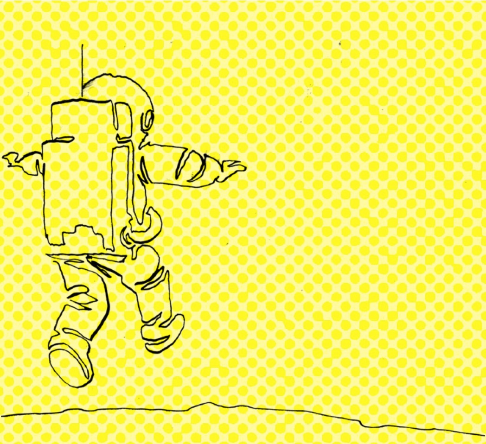
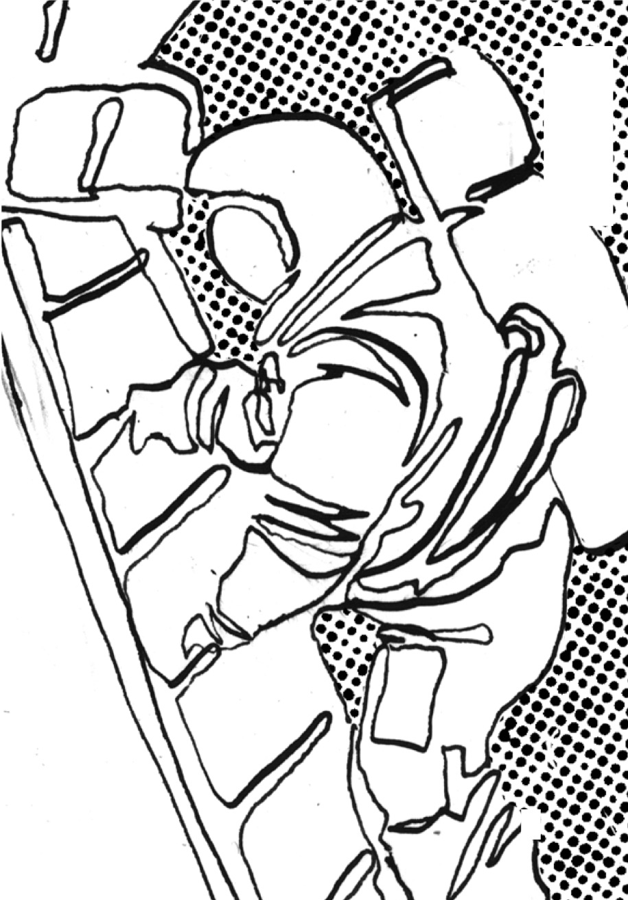
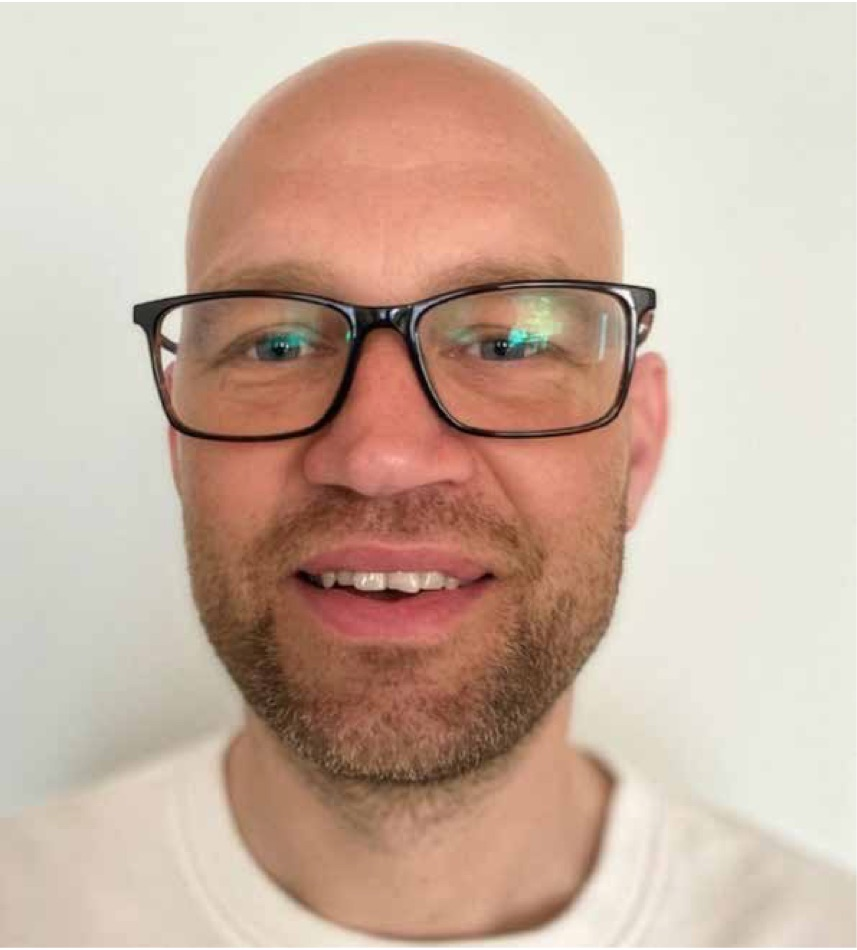

– att väcka nyfikenhet i en tid av klick och algoritmer

I en värld där svaren finns ett klick bort, och där algoritmer redan styr vad vi ser, blir själva frågan i sig en värdefull resurs. Nyfikenhet är inte bara något en del har lättare för än andra (alla har vi mött personer som verkar oerhört nyfikna på allt nytt!), eller endast något som präglar ett frågvist barn. Nyfikenhet är också en motor för lärande och personlig utveckling - en impuls som vi kan designa för att trigga när vi arbetar med lärande. Forskning visar att nyfikenhet aktiverar vår uppmärksamhet, den gör att vi bearbetar information djupare, minns bättre och är uthålliga tills vi når våra mål (Silvia, 2006; Kashdan et al., 2009). Den handlar om att vilja utforska, prova nya saker och kontinuerligt ackumulera erfarenheter och färdigheter. En disposition nära kopplad till livslångt lärande (Fulcher, 2008).
Men hur ser nyfikenhet ut i praktiken, bland vuxna i arbetsliv och utbildning? I våra intervjuer och workshops ser vi flera konkreta exempel på hur människor triggas att bli nyfikna. Forskaren Jessica Körning Ljungberg beskriver hur hon uppmuntrar sina studenter att formulera sina egna frågor och experimentera med idéer. Hon berättar att det ibland räcker med att lägga fram något på ett oväntat sätt för att en hel grupps intresse ska väckas och tända till. Det handlar inte alltid om stora innovationer eller spektakulära experiment, ofta är det de små överraskningarna som väcker nyfikenheten.
Forskaren Daniel Sörman reflekterar över samma sak men med en annan ingång, han lyfter fram hur nyfikenhet väcks när människor får utrymme att fundera över egna erfarenheter och ifrågasätta sina rutiner.
“Det handlar om att skapa situationer där folk kan känna ‘aha, det här vill jag förstå mer’,”
Det handlar alltså inte om att servera svaren, utan om att ge möjlighet till frågeställningar som engagerar.
Reflektion i grupp
Forskaren Elisabeth Åström pekar på vikten av reflektion i grupp. Hon beskriver hur deltagare i workshops ofta blir nyfikna när de hör andras erfarenheter. När man får lyssna på någon annan som står inför samma utmaning eller ämne som man själv, men som hanterar det på ett oväntat sätt, då väcks nyfikenheten hos de flesta. Man börjar själv fundera på hur man kan göra annorlunda. Här ser vi hur nyfikenhet inte bara är individuell utan också social. Den väcks i dialog, i mötet med andra perspektiv.
I entreprenörsvärlden visar Mikael Ahlström hur nyfikenhet kan triggas genom konkreta problem och hands-on aktiviteter. Han berättar om hur team som får testa idéer i små, trygga experiment - snabbt blir engagerade. När man låter folk bygga, misslyckas och försöka igen, ser man nyfikenheten växa. Det är då deltagare vill veta hur nästa iteration kommer att fungera, får egna idéer om vad de vill ta reda på tills dess och känner nyfikenheten väckas. Det är handlingen och inte teorin, som skapar lusten att utforska. Misslyckanden blir inte hinder utan signaler som väcker frågor som, hur kan jag göra bättre? Vad kan jag lära mig av detta?
Helena Sjöström, tidigare vice vd på Nox, berättar med sitt organisatoriska perspektiv om situationer där nyfikenhet drivs av behovet av innovation och strategiskt tänkande:
“När vi stod inför stora förändringar tvingades vi ställa frågor som ingen egentligen hade svar på. Det var nyfiken heten som drev oss – att förstå konsekvenser, testa olika scenarier och ifrågasätta våra vanliga rutiner.”
Nyfikenhet är alltså en drivkraft inte bara för individen utan för hela organisationer. När vi i projektet själva planerat möten, kurser eller workshops har det handlat mycket om att trigga denna nyfikenhetsimpuls. Men vi vet också att det inte alltid fungerar – ibland förblir deltagarna ointresserade, passiva eller frustrerade. Vad är det som saknas då? Våra intervjuer och erfarenheter pekar på några återkommande mönster:
Nyfikenhet väcks när människor känner sig delaktiga och kan påverka vad som utforskas. Att bara tänka ut lärande åt andra utan att involvera dem, är därför inte alltid en god idé.
Ovisshet och små överraskningar skapar motivation att utforska vidare. Att köra på i gamla mönster kan få motsatt effekt.
Reflektion över egna erfarenheter och utmaningar kopplar lärandet till individen på ett personligt plan. Att inte prioritera reflektion är därför rent kontraproduktivt.
Social interaktion, där man kan höra andras frågor och lösningar, förstärker nyfikenhet. Att skapa lärande som man bara ska ta till sig individuellt, kan därför riskera att inte nå den effekt man vill åt.
I våra workshops har vi ofta använt utforskande moment där deltagarna själva fått reflektera över vad som väckt deras nyfikenhet. Vi har bett dem diskutera sådant som; “vad gjorde dig nyfiken senast, när kände du lusten att veta mer?” Samtidigt har vi jobbat med att inspirera och tillsammans utforska konkreta exempel på hur man kan designa aktivitet som triggar nyfikenhet.
Forskningen stödjer denna vår från praktiken funna insikt: nyfikenhet kan både ses som en personlig läggning och som en kvalitet som kan stimuleras i rätt miljö (Kashdan et al., 2009). Att aktivt designa aktiviteter som väcker nyfikenhet handlar alltså inte om skojiga saker som bryter av (även om leken som vi betonar är avgörande viktig), utan om att skapa situationer där deltagarna själva får möjlighet att ställa frågor, utforska och testa. Det skapar den där lusten att fortsätta lära.
Neuroscience och nyfikenhet
Forskning visar också att nyfikenhet inte bara är en psykologiskt betingad känsla utan har tydliga kopplingar till hjärnans belönings- och minnessystem. När vi är nyfikna aktiveras dopaminsystemet, som i sin tur påverkar hippocampus och stärker inlärning (Gruber et al., 2014). I experiment har man även sett att nyfikenhetsdrivna tillstånd ökar aktiviteten i VTA/SN* och hippocampus, samt kopplingen däremellan. Det här är en process som stödjer insikten om att nyfikenhet förbättrar stabilisering och långsiktig integrering av nya minnen i hjärnans nätverk. Det sker ofta under sömn, vilket gör att de kan hållas kvar och kopplas till tidigare minnen. Om du till exempel har hört att du behöver sova innan ett test eller prov eller något annat som kräver ditt lärande, stämmer alltså detta.

Dessutom visar översiktsstudier att nyfikenhet kan betraktas som en drift att söka information även utan direkt belöning. Dopaminceller reagerar på förutsägelser om information (information prediction errors), liknande hur de reagerar på belöningar (Bromberg-Martin, E. S., & Hikosaka, O. 2009). Alltså, om du förväntar dig att få information eller ny kunskap, triggas belöningssystemet så att du också vill få den, och blir motiverad.
Vi ser också i praktiken hur nyfikenhet kopplas till motivation på längre sikt. Deltagare som upplever att deras frågor tas på allvar och får utrymme, tenderar att utveckla en mer positiv inställning till livslångt lärande. När nyfikenheten blir en vana, en kultur i gruppen eller i organisationen, börjar folk själva söka efter nya perspektiv, ställa frågor och driva projekt framåt utan att någon måste pusha dem. Det är denna självgenererande aspekt av nyfikenhet som gör den livsnödvändig i både personliga och professionella sammanhang.
Slutligen och sammanfattningsvis handlar Play to discover om att förstå nyfikenhet både som inre drivkraft och som något som kan väckas och förstärkas genom design. Forskning, praktiska exempel och deltagarnas egna erfarenheter visar att nyfikenhet blomstrar när människor får utrymme att ställa frågor, testa idéer och reflektera tillsammans. I en tid av algoritmer, filterbubblor och färdiga svar blir detta kanske den viktigaste kompetensen av alla. Att våga undra, upptäcka och alltid vilja veta mer.
Intervju med Daniel Sörman
Kraften i nyfikenhet
- Daniel Sörman, lektor i psykologi vid Umeå Universitet
Daniel Sörman är lektor i psykologi vid Umeå universitet och har under lång tid forskat om frågor som relaterar till lärande – särskilt hur hjärnan bearbetar information, minns, glömmer och förändras över tid. Han hade innan vårt projekt arbetat både med yngre och äldre vuxna i olika sammanhang, men själva etiketten “livslångt lärande” hade han inte använt sig av, även om innehållet i praktiken på många sättt funnits där hela tiden.
I projektgruppen fick Daniel i uppdrag att bidra med sina perspektiv kring vad som driver människor att vilja lära. Med sin kognitionspsykologiska bakgrund låg det nära till hands för honom att fokusera både på hur hjärnan påverkar lärandet och på vilka personliga egenskaper som spelar roll över tid. Tillsammans med Jessica Körning Ljungberg och Elisabeth Åström formade de en forskartrio som ville ringa in det svårfångade; varför lär vi oss vissa saker med glädje och andra med motstånd? Vad skiljer dem som återvänder till lärande hela livet från dem som inte gör det?
”Vi försökte hitta några nyckelfaktorer som håller över tid, som motivation, nyfikenhet och självreflektion, och ganska snabbt såg vi hur tätt de hänger ihop. Även framplockning – att aktivt plocka fram det man lärt sig - utgör en viktig komponent för lärandet .”
Det som snart utkristalliserade sig i Daniels del av projektet var nyfikenheten – ett välbekant ord, men inte ett enkelt begrepp. Vad innebär det att vara nyfiken? Är det en impuls, en inarbetad vana, ett personlighetsdrag, eller en förmåga?

Olika sorters nyfikenhet
I forskningen lyfts ofta den kunskapsteoretiska nyfikenheten – drivkraften att fylla kunskapsluckor och komma vidare i en tankebana – som central för lärande (Litman, 2005). Men nyfikenhet handlar också om mer än kognitiva behov. Det finns en sensorisk och upplevelsebaserad nyfikenhet, där vi söker nya intryck och känslomässiga erfarenheter, och en relationell eller empatisk nyfikenhet – viljan att förstå andra människors tankar, känslor och handlingar. Den senare är avgörande i komplexa miljöer som kräver samarbete och perspektivtagande och visar att nyfikenhet inte bara handlar om att veta mer, utan också om att förstå djupare.
Alla formerna av nyfikenhet har en plats i design för lärande. I vissa sammanhang måste vi väcka den kunskapsteoretiska nyfikenheten, i andra behöver vi stimulera den relationella eller upplevelsebaserade. Ett centralt spår i projektet blev dock att först försöka förstå vilka personer som aktivt väljer att engagera sig i lärande, och vilka som inte gör det. För att försöka besvara detta använde Daniel en av världens största longitudinella databaser: Betula-projektet i Umeå, där tusentals personer har följts under decennier (Nilsson et al., 1997; Nyberg et al., 2020). Inom ramen för projektet finns bland annat information om personlighet, livssituation, och engagemang i olika lärandeaktiviteter. När data just om engagemang i olika lärandeaktiviteter kopplades till personlighetsmodeller - framträdde tydliga samband i forskningen. Personer med hög grad av novelty seeking – vilket bland annat innebär benägenhet att aktivt söka nya upplevelser, utmaningar och situationer – deltog oftare i lärandeaktiviteter och bytte jobb oftare (Sörman et al., 2024). Samtidigt finns en risk att flera i den gruppen tappar uthållighet och intresset snabbt, då detta drag även karaktäriseras av personer som snabbt kan tappa motivationen om nyfikenhetsfaktorn, spänningen och belöningarna minskar. Detta är ett mönster som påminner oss om att personlighetsdrag rymmer både styrkor och utmaningar och att designen för olika lärandeverktyg behöver ta höjd för det.
”Jag tror man måste våga se att människor är olika. Vissa hoppar på allt nytt, andra har ett inbyggt motstånd. Men beteenden går att förändra – om man får stöd, trygghet och återkoppling.”
En storlek passar inte alla
Daniel var även delaktig i utvecklingen av de digitala reflektions verktyg som testades i olika piloter, där både studenter och vuxna besvarade reflektionsfrågor via ljud- och videoinspelningar under olika lärandeaktiviteter, såsom kurser och utbildningar. Många var positiva, och där det fanns motstånd - handlade detta ofta om formatet, snarare än om reflektionen i sig. Här blir individ anpassning en nödvändighet. Vissa behöver trygghet för att våga tänka högt, andra behöver struktur eller socialt sammanhang, ytterligare andra vill reflektera i tystnad. I piloterna framkom också att tiden är en praktisk barriär – reflektion riskerar att bortprioriteras i en pressad vardag – vilket pekar på behovet av att faktiskt avsätta tid i organisationer och utbildningar.
”Det där känner nog alla igen, oavsett miljö. Vi vet att reflektion fungerar, men den prioriteras ofta bort för att den inte upplevs
som akut. Den är långsiktig, och vi människor drivs ofta av det kortsiktiga.”
En viktig insikt för Läran att lära – både utifrån personlighets studien och de digitala självreflektionerna - blev att det inte finns en universell modell för lärande. Det som stimulerar en person kan blockera en annan. Att reflektera via video kan för vissa kännas meningsfullt och motiverande, medan andra upplever motstånd mot att se sig själva. Skillnaderna behöver alltså inte handla om innehåll eller teknik utan också om självbild, trygghet och tidigare erfarenheter. Nyfikenheten är också något man kan träna, väcka och forma. Den behöver en miljö där det är tillåtet att ställa frågor och prova nytt.
Självledarskap är en annan central komponent, att människor kan och bör ta ansvar för sitt eget lärande. Självledarskap uppstår inte av sig själv, det måste stödjas, tränas och uppmuntras – och här fungerar nyfikenheten som katalysator. När vi får fylla våra egna kunskapsluckor visar tidigare forskning att belöningssystemet aktiveras och inlärningen förstärks. Självreflektion och återkommande framplockning – att hämta upp kunskap ur minnet – ökar både förståelse och långtidslagring och kan utgöra en viktig del av självledarskapet.
”När vi ger människor tid att reflektera och feedback på sitt lärande, då händer något. Det skapar motivation och väcker nyfikenhet, och plötsligt är man mitt i lärandet istället för vid sidan av det.”
I arbetet med att förstå lärande och nyfikenhet, återkommer vissa möjliga mönster:
Nyfikenhet är ojämnt fördelad – men formbar
Vissa bär ett naturligt driv att leta nytt; andra inte. Det betyder inte att nyfikenhet saknas, utan att den kan ligga i träda och behöver väckas på olika sätt. Design för lärande blir här avgörande för att kunna inkludera alla.
Personlighet ger riktning – design ger fart
Novelty seekers hoppar igång själva men kan bränna intresset; harm avoidance-personlighetrer undviker risker men blommar när miljön känns trygg. Lärandedesign måste inkludera båda.
Självledarskap kräver stödstrukturer
Att “äga sitt lärande” vilar på tydliga mål, utrymme att ställa egna frågor och återkoppling som visar progression. Utan det blir uppmaningen tom.
Playguide – att designa för nyfikenhet, tips på vägen
Plantera luckor att fylla
Starta varje moment med ett konkret “mysterium” eller en frågeställning.
Visa en kort sekvens som avbryts precis innan svaret; låt deltagarna resonera innan svaret.
Skapa mikro-överraskningar
Byt format, miljö eller tempo strax innan intresset dalar.
Skifta från föreläsning till demo, från text till interaktiv quiz.
Tillåt sidospår
Nyfikenhet vandrar – ge plats för omvägar utan att tappa ramen.
Ha en digital “utforskarlåda” med frivilliga fördjupningar och belöna delade fynd
Utgå från det personliga
Koppla stoffet till deltagarnas erfarenheter och mål.
Inled gärna med: “hur relaterar detta till något du nyligen stött på i vardagen/på jobbet?”
Bygg social spegling
Låt frågor och aha-ögonblick smitta i gruppen.
Jobba i par: formulera en fråga, bygg sedan vidare på partnerns
Reglera risknivån
Nyfikenhet kvävs av skam/provpanik, men behöver ändå viss lätt friktion.
Ersätt betygsmoment med “tillåtna misslyckanden”, såsom minitest för egen bedömning.